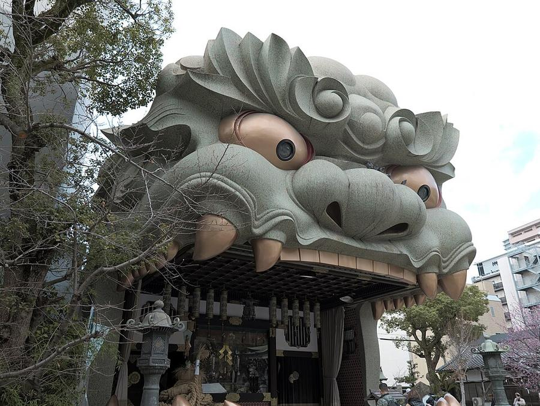
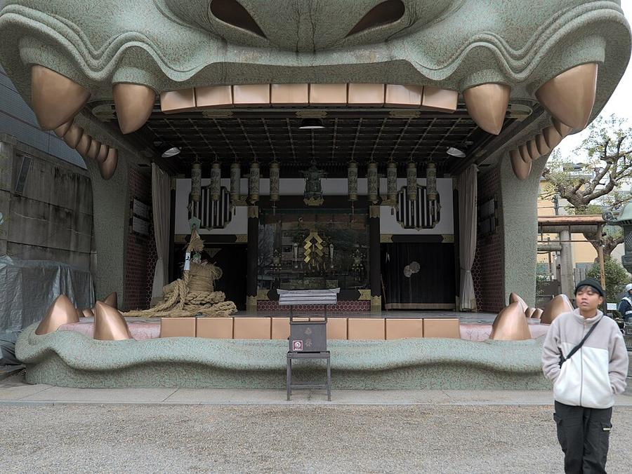
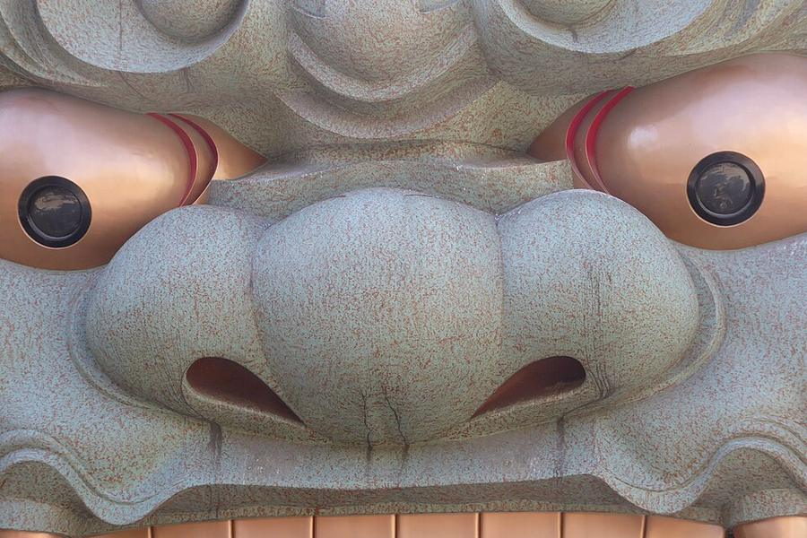

6Namba Yasaka: голова льва
難波八阪神社 · Юг · Namba, Shinsekai, Tennoji


_Shrine_hdsr_S5_l07.jpg){kind=link}


_Shrine_hdsr_S5_l05.jpg){kind=link}



Небольшое святилище в жилых кварталах за Namba. Главное - сцена в форме головы льва высотой 12 м (1974) с открытой пастью. По поверью, лев «проглатывает» злых духов и неудачи.
Остановка на 15-20 минут, вход свободный. Ничего похожего в Kyoto и Tokyo не было.
| Часы | 6:00-17:00 (osaka-info) |
|---|---|
| Вход | бесплатно |
| Наши даты | открыто |
| На месте | 15-20 мин |
| Дождь | 🌳 под открытым небом, лучше без дождя |
Источник часов и цен: nambayasaka.jp (офиц.), osaka-info.jp
Как добраться от отеля
- Метро Midosuji (красная) от Umeda в сторону Tennoji, платформа 1: Yodoyabashi → Hommachi → Shinsaibashi → Namba, 9 мин. От Namba ~11 мин пешком на юго-запад.
Рядом

7. Рынок KuromonКрытый рынок с 1820-х: едят прямо у прилавков

8. Shinsekai и башня TsutenkakuРетро-квартал 1912 года, кушикацу, башня 1956 года
Фото: Wikimedia Commons, автор и лицензия под каждым. Поезда: Yahoo!乗換案内 на 24-26.10.2026, пешие отрезки: OSRM. Часы и цены проверены 25.10.2026 12:49 JST. ← ко всем местам